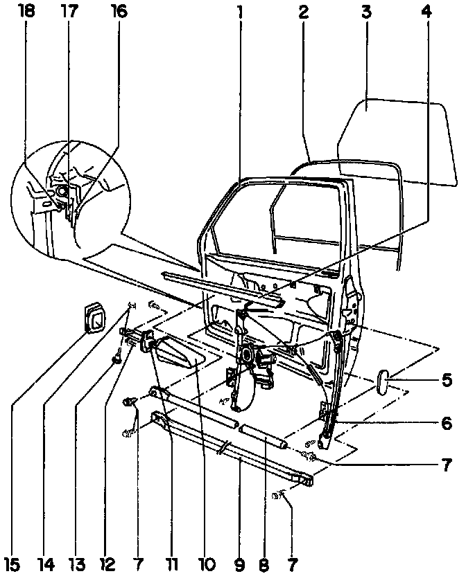

Assembly Overview
Door Assembly
1. Door
Removing and installing Service and Repair
Adjust at hinge within oversized holes. Adjustments
2. Window channel
Fastened into window frame
3. Door window
Removing
Adjusting Adjustments
4. Window slot seal
Pushed onto flange
5. Cover
To close opening for impact member
6. Window regulator
Removing and installing Power Window Regulator Removal
7. Hex bolt
23 Nm (17 ft lb)
8. Upper side impact member
Steel
9. Lower side impact member
Aluminium
10. Door check strap sleeve
11. Door check strap
12. Hex-head screw
7.5 Nm (66 in. lb)
13. Bolt
14. Locking nut
6.5 Nm (58 in. lb)
15. Door check strap cover
Self-adhesive, attached to A-pillar
16. Door hinge
Bolted to door and A-pillar
Hinge bolts inserted into box section and secured with screw
17. Torx bolt T45
36 Nm (27 ft lb)
18. Screw
23 Nm (17 ft. lb)